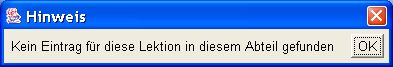

Wenn du eine Fremdsprache lernen möchtest, musst du die Worte
immer wieder repetieren, bis sie sitzen.
Das kannst du machen, indem du im Buch mit einem Blatt eine Spalte
abdeckst. Der Nachteil dieser Methode ist, dass du dir eine Reihenfolge
merkst und auch dass du die Worte, die du schon beherrscht ebenfalls
repetieren musst.
Die Lernkartei schafft Abhilfe. Du schreibst auf einer Karteikarte
vorne das Wort in deutsch und hinten in der Fremdsprache. Die neu
geschreibenen Kärtchen legst du in das vorderste Fach. Wenn du
lernen möchtest nimmst du den Stapel Kärtchen aus dem
vordersten Fach und liest die deutsche Seite. Wenn Du das Wort kannst,
legst du das Kärtchen ins nächste Fach und wenn du es nicht
gewusst hast, in das erste Fach. Wenn das erste Fach leer ist, nimmst
Du den Stapel aus den zweiten Fach. Kärtchen die du kannst legst
du ins dritte Fach und die anderen zurück ins erste Fach. usw.
Es funktioniert genau so wie sein Vorbild aus Karton. Es hat ein paar Vorteile:
und ein Nachteile:
Du klickst auf die Verknüpfung auf dem Desktop oder im
Start-Menu und das Programm startet.
Weil du noch keine "Karteikärtchen" eingegeben hast und
das Programm nicht wissen kann, welche Sprache Du lernen möchtest,
kommt als erstes dieses Fenster:
Du tippst einfach die Sprache ein und drückst am Schluss die
"ENTER"-Taste (das ist die grosse Taste rechts).
Nun möchte das Programm wissen, wieviele Abteile (oder
Kartei-Fächer) du anlegen möchtest.
Du kannst mit der "ENTER"-Taste den eingestellten Wert
übernehmen.
Nun erscheint das Programm in einem normalen Fenster.
Bevor du mit Lernen beginnen kannst, musst du die Worte auf die
Karteikarte schreiben. Entschuldigung ich meine in den PC eintippen.
Dazu wählst du im Menu "Bearbeiten" den Punkt
"Eingeben".
Und schon wieder möchte der PC etwas von dir wissen.
Nämlich welche Lektion du eintippen möchtest.
Das ist nützlich, weil du so später zum Beispiel nur die
Vokabeln der Lektion 6 repetieren kannst.
Nun kannst Du die Worte so eintippen, wie sie im Buch stehen: im
linken Feld in der Fremdsprache ("ENTER"-Taste nicht
vergessen) und im rechten Feld das deutsche Wort
("ENTER"-Taste nicht vergessen).
Am Balken auf der rechten Bildseite siehst du wieviele Worte du schon
eingetippt hast.
Es gilt ernst. Du wirst staunen, wieviel du beim Eintippen schon
gelernt hast. Wähle im Menu "Bearbeiten" den Punkt
"Lernen".
Auf der rechten Seite erscheint das deutsche Wort, du musst das Wort
in der Fremdsprache im linken Feld eintippen ("ENTER"-Taste
nicht vergessen).

Wenn das Wort richtig ist, erscheint es grün (= gut) unterlegt.
Die Erfolgsstatistik auf der linken Seite zählt bei
"grün" eins dazu. Auf der rechten Seite siehst Du wie
das Kärtchen ein Abteil weiterwandert. Mit "ENTER" geht
es weiter zum nächsten Wort.
Wenn das Wort falsch ist, erscheint es blau (= du hast noch eine
Chance) unterlegt. Dort wo die Buchstaben falsch sind, siehst du einen
"*". Korrigiere die "*" mit den richtigen
Buchstaben und drücke die "ENTER"-Taste.
Wenn das Wort jetzt richtig ist, erscheint es gelb (= also doch
gewusst) unterlegt. Auf der linken Seite kommt bei "gelb"
eins dazu. Das Kärtchen bleibt im gleichen Abteil liegen.
Wenn es nochmals falsch war, siehst du rot (= das sitzt noch nicht).
"rot" wird um eins erhöht und das Kärtchen kommt in
das erste Abteil.
Wenn du alles gekonnt hast, sind alle Kärtchen ein Abteil
weiter gewandert und das Abteil ist leer.

Wenn diese Medlung erscheint, musst du das Abteil wechseln und es geht
mit dem nächsten Abteil weiter.

Wenn du nur eine bestimmte Lektion gelernt hast, kann die Meldung auch
dann kommen, wenn das Abteil nicht leer ist, also wenn es einfach von
dieser Lektion keine Kärtchen mehr hat. In diesem Fall
änderst du die Zahl bei der Lektion (0 = alle Lektionen lernen)
und drückst "ENTER".
Wenn du genug gelernt hast, kannst du das Programm mit dem Menu
"Datei" und dem Punkt "Beenden" schliessen. Das
Programm frägt, ob du die eingetippten und gelernten Kärtchen
speichern möchtest. Wenn du "Nein" wählst, gehen
alle Eingaben und Änderungen verloren.
Wenn du Lust hast, kannst du das Kapitel Bedienung durchsehen, wo weitere Details werden.
Hier kommst du zurück auf die Startseite dieser Hilfe.